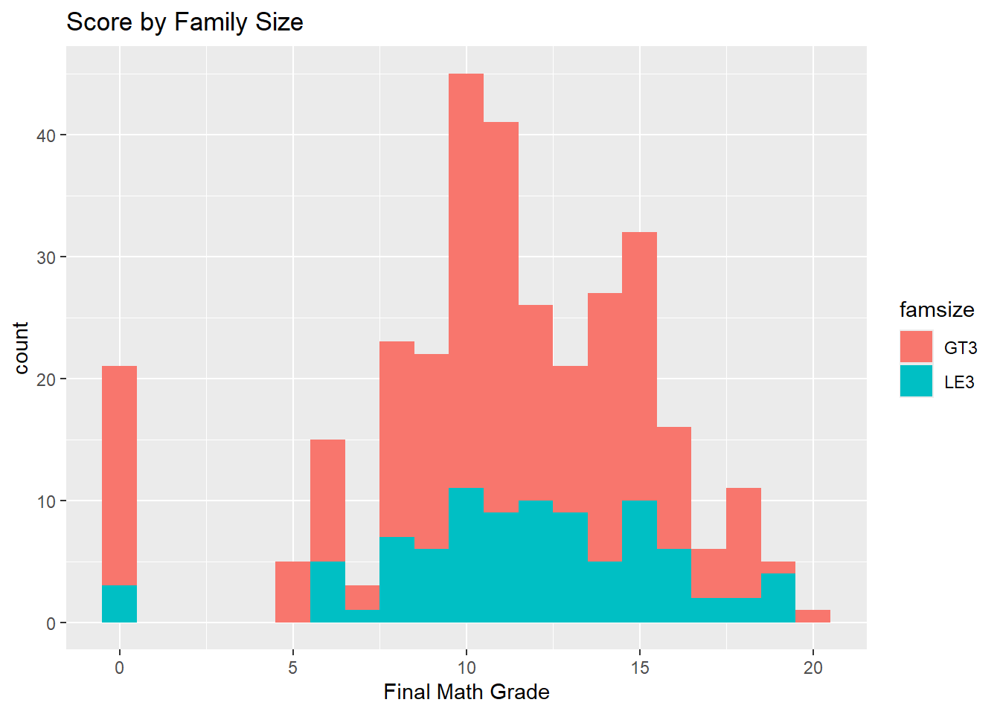
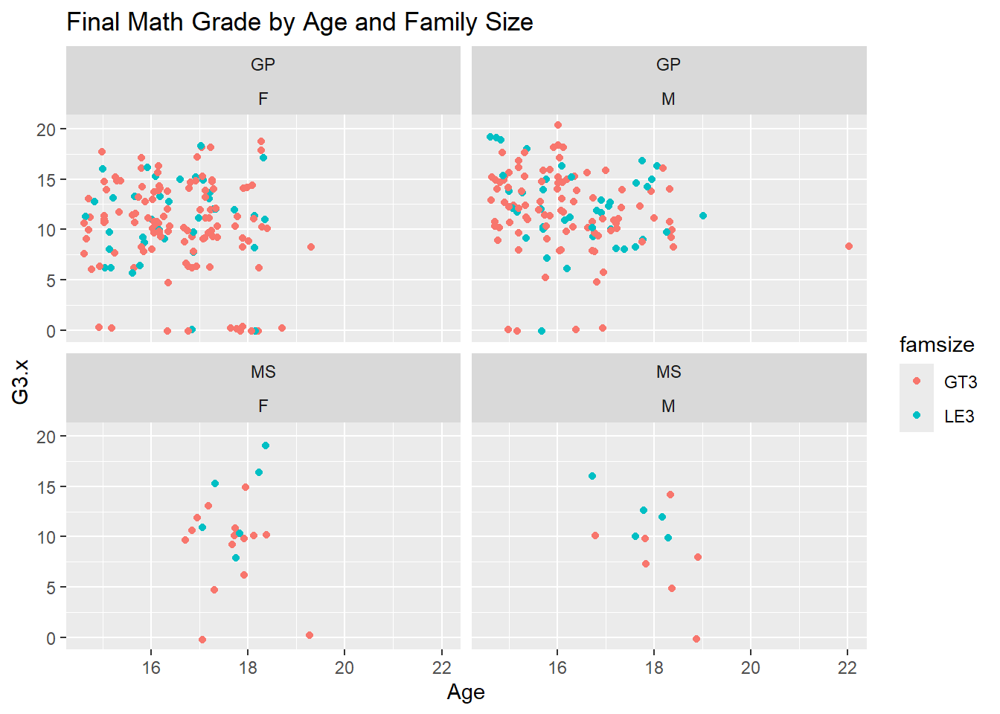

First, the data will be read in and combined using the code provided from UCI.
d1=read.table("student-mat.csv",sep=";",header=TRUE)d2=read.table("student-por.csv",sep=";",header=TRUE)d3=merge(d1,d2,by=c("school","sex","age","address","famsize","Pstatus","Medu","Fedu","Mjob","Fjob","reason","nursery","internet"))print(nrow(d3)) # 382 students
[1] 382
Second, the data will be read in using the tidyverse and inner_join() while matching on the same variables as UCI.
library("tidyverse")
Warning: package 'tidyverse' was built under R version 4.3.3
Warning: package 'ggplot2' was built under R version 4.3.3
Warning: package 'lubridate' was built under R version 4.3.3
── Attaching core tidyverse packages ──────────────────────── tidyverse 2.0.0 ──
✔ dplyr 1.1.4 ✔ readr 2.1.5
✔ forcats 1.0.0 ✔ stringr 1.5.1
✔ ggplot2 3.5.0 ✔ tibble 3.2.1
✔ lubridate 1.9.3 ✔ tidyr 1.3.1
✔ purrr 1.0.2
── Conflicts ────────────────────────────────────────── tidyverse_conflicts() ──
✖ dplyr::filter() masks stats::filter()
✖ dplyr::lag() masks stats::lag()
ℹ Use the conflicted package (<http://conflicted.r-lib.org/>) to force all conflicts to become errors
mat<-read_csv2("student-mat.csv")
ℹ Using "','" as decimal and "'.'" as grouping mark. Use `read_delim()` for more control.
Rows: 395 Columns: 33── Column specification ────────────────────────────────────────────────────────
Delimiter: ";"
chr (17): school, sex, address, famsize, Pstatus, Mjob, Fjob, reason, guardi...
dbl (16): age, Medu, Fedu, traveltime, studytime, failures, famrel, freetime...
ℹ Use `spec()` to retrieve the full column specification for this data.
ℹ Specify the column types or set `show_col_types = FALSE` to quiet this message.
por<-read_csv2("student-por.csv")
ℹ Using "','" as decimal and "'.'" as grouping mark. Use `read_delim()` for more control.
Rows: 649 Columns: 33── Column specification ────────────────────────────────────────────────────────
Delimiter: ";"
chr (17): school, sex, address, famsize, Pstatus, Mjob, Fjob, reason, guardi...
dbl (16): age, Medu, Fedu, traveltime, studytime, failures, famrel, freetime...
ℹ Use `spec()` to retrieve the full column specification for this data.
ℹ Specify the column types or set `show_col_types = FALSE` to quiet this message.
Warning in inner_join(mat, por, by = join_by(school == school, sex == sex, : Detected an unexpected many-to-many relationship between `x` and `y`.
ℹ Row 79 of `x` matches multiple rows in `y`.
ℹ Row 79 of `y` matches multiple rows in `x`.
ℹ If a many-to-many relationship is expected, set `relationship =
"many-to-many"` to silence this warning.
R throws a warning that there is an unexpected many-to-many relationship between the two data sets. It seems that there are more matching variables in the data set. It is likely not joined correctly. Now, the data will be matched on all variables except absences, G1, G2, and G3.
# A tibble: 395 × 33
school sex age address famsize Pstatus Medu Fedu Mjob Fjob reason
<chr> <chr> <dbl> <chr> <fct> <fct> <dbl> <dbl> <fct> <fct> <chr>
1 GP F 18 U GT3 A 4 4 at_home teach… course
2 GP F 17 U GT3 T 1 1 at_home other course
3 GP F 15 U LE3 T 1 1 at_home other other
4 GP F 15 U GT3 T 4 2 health servi… home
5 GP F 16 U GT3 T 3 3 other other home
6 GP M 16 U LE3 T 4 3 services other reput…
7 GP M 16 U LE3 T 2 2 other other home
8 GP F 17 U GT3 A 4 4 other teach… home
9 GP M 15 U LE3 A 3 2 services other home
10 GP M 15 U GT3 T 3 4 other other home
# ℹ 385 more rows
# ℹ 22 more variables: guardian <chr>, traveltime <dbl>, studytime <dbl>,
# failures <dbl>, schoolsup <chr>, famsup <chr>, paid <chr>,
# activities <chr>, nursery <chr>, higher <chr>, internet <chr>,
# romantic <chr>, famrel <dbl>, freetime <dbl>, goout <dbl>, Dalc <dbl>,
# Walc <dbl>, health <dbl>, absences <dbl>, G1 <dbl>, G2 <dbl>, G3 <dbl>
# A tibble: 649 × 33
school sex age address famsize Pstatus Medu Fedu Mjob Fjob reason
<chr> <chr> <dbl> <chr> <fct> <fct> <dbl> <dbl> <fct> <fct> <chr>
1 GP F 18 U GT3 A 4 4 at_home teach… course
2 GP F 17 U GT3 T 1 1 at_home other course
3 GP F 15 U LE3 T 1 1 at_home other other
4 GP F 15 U GT3 T 4 2 health servi… home
5 GP F 16 U GT3 T 3 3 other other home
6 GP M 16 U LE3 T 4 3 services other reput…
7 GP M 16 U LE3 T 2 2 other other home
8 GP F 17 U GT3 A 4 4 other teach… home
9 GP M 15 U LE3 A 3 2 services other home
10 GP M 15 U GT3 T 3 4 other other home
# ℹ 639 more rows
# ℹ 22 more variables: guardian <chr>, traveltime <dbl>, studytime <dbl>,
# failures <dbl>, schoolsup <chr>, famsup <chr>, paid <chr>,
# activities <chr>, nursery <chr>, higher <chr>, internet <chr>,
# romantic <chr>, famrel <dbl>, freetime <dbl>, goout <dbl>, Dalc <dbl>,
# Walc <dbl>, health <dbl>, absences <dbl>, G1 <dbl>, G2 <dbl>, G3 <dbl>
# A tibble: 320 × 38
school sex age address famsize Pstatus Medu Fedu Mjob Fjob reason
<chr> <chr> <dbl> <chr> <fct> <fct> <dbl> <dbl> <fct> <fct> <chr>
1 GP F 18 U GT3 A 4 4 at_home teach… course
2 GP F 17 U GT3 T 1 1 at_home other course
3 GP F 15 U GT3 T 4 2 health servi… home
4 GP F 16 U GT3 T 3 3 other other home
5 GP M 16 U LE3 T 4 3 services other reput…
6 GP M 16 U LE3 T 2 2 other other home
7 GP F 17 U GT3 A 4 4 other teach… home
8 GP M 15 U LE3 A 3 2 services other home
9 GP M 15 U GT3 T 3 4 other other home
10 GP F 15 U GT3 T 4 4 teacher health reput…
# ℹ 310 more rows
# ℹ 27 more variables: guardian <chr>, traveltime <dbl>, studytime <dbl>,
# failures <dbl>, schoolsup <chr>, famsup <chr>, paid.x <chr>,
# activities <chr>, nursery <chr>, higher <chr>, internet <chr>,
# romantic <chr>, famrel <dbl>, freetime <dbl>, goout <dbl>, Dalc <dbl>,
# Walc <dbl>, health <dbl>, absences.x <dbl>, G1.x <dbl>, G2.x <dbl>,
# G3.x <dbl>, paid.y <chr>, absences.y <dbl>, G1.y <dbl>, G2.y <dbl>, …
Task 2: Summarize the Data (Very Basic EDA)
To do a basic EDA, we’ll look over some statistics for our variables. We know a bit about the variables from the website and nothing in the summary statistics seems unreasonable.
We can create a one-way contingency table on famsize, which will give us the number of children that come from a household with more than 3 people and the number that come from a family with 3 people or fewer.
one_way<-table(my_data$famsize)one_way
GT3 LE3
230 90
This two-way contingency table on famsize and Pstatus provides counts for every combination of family size and parents’ cohabitation status.
This three-way contingency table on Mjob, Fjob and Pstatus provides counts for every combination of the mother’s job, the father’s job, and the parents’ cohabitation status.
`summarise()` has grouped output by 'famsize'. You can override using the
`.groups` argument.
two_way_fam
# A tibble: 2 × 3
# Groups: famsize [2]
famsize A T
<chr> <int> <int>
1 GT3 16 214
2 LE3 15 75
Now we can create a stacked bar graph for parental cohabitation status, with the family size also indicated.
G<-ggplot(data=my_data, aes(x = Pstatus, fill= famsize))G +geom_bar()+labs(title ="Count of Parents Living Apart or Together", x ="Parent's Cohabitation Status", y ="Count")
Now we can create a side-by-side bar graphs for parental cohabitation status, with the family size also seperated.
G +geom_bar(position ="dodge")+labs(title ="Count of Parents Living Apart or Together", x ="Parent's Cohabitation Status", y ="Count")
These graphs show that the vast majority of children have parents who live together, and those families are predominantly larger than 3 people. Of the children whose parents live apart, the family size is pretty evenly split.
Numeric Variables
The mean and standard deviation for the variables age, absences in the math data set (absences.x) and the final math score (G3.x) are calculated.
There are some high correlations between some of the test scores, but not all of them. Most of the realtionships seem realtively weak.
We can create a histogram, kernel density plot, and boxplot for age grouped by famsize.
N<-ggplot(data=my_data, aes(x = age, fill=famsize))N +geom_histogram(binwidth=1)+labs(title ="Age of Child by Family Size", x ="Age",)
This histogram is pretty clunky, but you can see where most of the ages are clustered and that they seem to be more varied in the LE3.
N +geom_density(adjust=2)+labs(title ="Age of Child by Family Size", x ="Age",)
The kernel density graph shows the distribution in a similar way. I don’t think having a smoother histogram made this graph look better. This is likely due to the numeric variable being discrete.
S<-ggplot(data=my_data)S +geom_boxplot(aes(x=age, y=famsize))+labs(title ="Age of Child by Family Size", x ="Age",)
Based on the boxplots, the age of the children with families of less greater than 3 is smaller and less varied. But it also has a smaller sample size.
We’ll do the same graphs for G3.x grouped by famsize.
H<-ggplot(data=my_data, aes(x = G3.x, fill=famsize))H +geom_histogram(binwidth =1)+labs(title ="Score by Family Size", x ="Final Math Grade",)

Again, LE3 seems to be more varied. It also seems reasonable to infer that the children who gots a 0 didn’t take the exam, given that no one scored close to 0.
H +geom_density()+labs(title ="Final Math Grade by Family Size", x ="Final Math Grade",)
The kernel density graph makes the distributions of the final math grade across family size seem pretty similar.
J <-ggplot(data=my_data)J +geom_boxplot(aes(x=G3.x, y=famsize))+labs(title ="Final Math Grade by Family Size", x ="Final Math Grade",)
I wouldn’t draw a ton of conclusion from this boxplot. These distributions seem pretty similar.
Now we’ll create a scatterplot between G3.x and age.
M <-ggplot(data=my_data, aes(x=age, y=G3.x, color=famsize)) M +geom_point(position ="jitter")+labs(title ="Final Math Grade by Age and Family Size", x ="Age")
Again, the 0 scores are very apparent. It’s really the only pattern.
Now we’ll do a scatterplot of G3.x and absences.x.
P <-ggplot(data=my_data, aes(x=absences.x, y=G3.x, color=famsize)) P +geom_point(position ="jitter")+labs(title ="Final Math Grade by Number of Absences and Family Size", x ="Number of Absences")
The outliers in the number of absences are very apparent in this graph.
Now, we will expand on the first scatterplot by factoring in sex.
M +geom_point(position ="jitter")+facet_wrap(~sex)+labs(title ="Final Math Grade by Age and Family Size", x ="Age")
Maybe females are younger? But we would have to investigate further.
Now for the second scatterplot.
P +geom_point(position ="jitter")+facet_wrap(~sex)
labs(title ="Final Math Grade by Number of Absences and Family Size", x ="Number of Absences")
$x
[1] "Number of Absences"
$title
[1] "Final Math Grade by Number of Absences and Family Size"
attr(,"class")
[1] "labels"
No clear distinction between the sexes.
Now we’ll factor in school as well.
M +geom_point(position ="jitter")+facet_wrap(school~sex)+labs(title ="Final Math Grade by Age and Family Size", x ="Age")

It does seem that students in the “MS” school are older, but there are far less students included from that school.
Now for the second scatterplot.
P +geom_point(position ="jitter")+facet_wrap(school~sex)
labs(title ="Final Math Grade by Number of Absences and Family Size", x ="Number of Absences")
$x
[1] "Number of Absences"
$title
[1] "Final Math Grade by Number of Absences and Family Size"
attr(,"class")
[1] "labels"
The difference in sample size between the schools is clear, but there does not seem to be a pattern wit the absences.